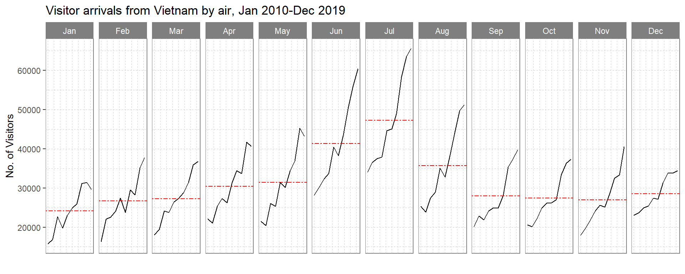
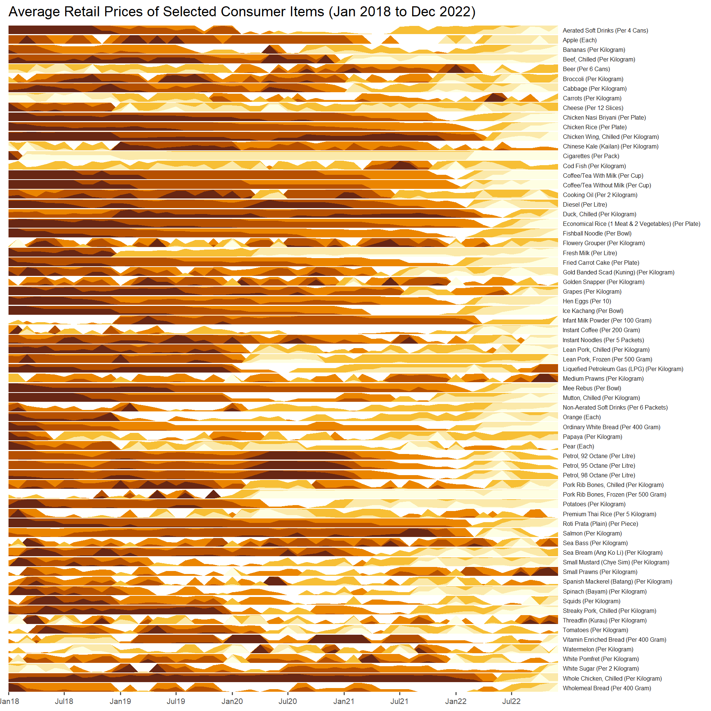

pacman::p_load(scales, viridis, lubridate, ggthemes, gridExtra,
readxl, knitr, data.table, CGPfunctions, ggHoriPlot, tidyverse)Hands-on Exercise 6
Visualising and Analysing Time-oriented Data
1 Overview
In this hands-on exercise, we learn to create the followings data visualisation by using R packages:
2 Installing and Launching R Packages
The code chunks below are used to install and load the packages in R.
3 Plotting Calendar Heatmap
By the end of this section, we will be able to plot a calender heatmap by using ggplot2 functions and its extension. On top of that, we will learn to derive specific date and time related field by using base R and lubridate packages.
3.1 Importing the data
For the purpose of this hands-on exercise, eventlog.csv file will be used. This data file consists of 199,999 rows of time-series cyber attack records by country.
First, the code chunk below is used to import eventlog.csv file into R environment and called the data frame as attacks.
attacks <- read_csv("data/eventlog.csv")Rows: 199999 Columns: 3
── Column specification ────────────────────────────────────────────────────────
Delimiter: ","
chr (2): source_country, tz
dttm (1): timestamp
ℹ Use `spec()` to retrieve the full column specification for this data.
ℹ Specify the column types or set `show_col_types = FALSE` to quiet this message.3.2 Examining the data structure
kable() can be used to review the structure of the imported data frame.
kable(head(attacks))| timestamp | source_country | tz |
|---|---|---|
| 2015-03-12 15:59:16 | CN | Asia/Shanghai |
| 2015-03-12 16:00:48 | FR | Europe/Paris |
| 2015-03-12 16:02:26 | CN | Asia/Shanghai |
| 2015-03-12 16:02:38 | US | America/Chicago |
| 2015-03-12 16:03:22 | CN | Asia/Shanghai |
| 2015-03-12 16:03:45 | CN | Asia/Shanghai |
There are three columns, namely timestamp, source_country and tz.
- timestamp field stores date-time values in POSIXct format.
- source_country field stores the source of the attack. It is in ISO 3166-1 alpha-2 country code.
- tz field stores time zone of the source IP address.
3.3 Data Preparation
Step 1: Deriving weekday and hour of day fields
Before we can plot the calender heatmap, two new fields namely wkday and hour need to be derived.
make_hr_wkday <- function(ts, sc, tz) {
real_times <- ymd_hms(ts,
tz = tz[1],
quiet = TRUE)
dt <- data.table(source_country = sc,
wkday = weekdays(real_times),
hour = hour(real_times))
return(dt)
}ymd_hms()andhour()are from lubridate package, andweekdays()is a base R function.
Step 2: Deriving the attacks tibble data frame
wkday_levels <- c('Saturday', 'Friday',
'Thursday', 'Wednesday',
'Tuesday', 'Monday',
'Sunday')
attacks <- attacks %>%
group_by(tz) %>%
do(make_hr_wkday(.$timestamp,
.$source_country,
.$tz)) %>%
ungroup() %>%
mutate(wkday = factor(
wkday, levels = wkday_levels),
hour = factor(
hour, levels = 0:23))Beside extracting the necessary data into attacks data frame, mutate() of dplyr package is used to convert wkday and hour fields into factor so they’ll be ordered when plotting
Table below shows the tidy tibble table after processing.
kable(head(attacks))| tz | source_country | wkday | hour |
|---|---|---|---|
| Africa/Cairo | BG | Saturday | 20 |
| Africa/Cairo | TW | Sunday | 6 |
| Africa/Cairo | TW | Sunday | 8 |
| Africa/Cairo | CN | Sunday | 11 |
| Africa/Cairo | US | Sunday | 15 |
| Africa/Cairo | CA | Monday | 11 |
3.4 Plotting the Calendar Heatmaps
Before plotting the heatmaps, the following code is used to count the total number of attacks on a particular hour and weekday:
grouped <- attacks %>%
count(wkday, hour) %>%
ungroup() %>%
na.omit()Let us examine the data frame.
kable(head(grouped))| wkday | hour | n |
|---|---|---|
| Saturday | 0 | 1081 |
| Saturday | 1 | 1053 |
| Saturday | 2 | 1088 |
| Saturday | 3 | 1130 |
| Saturday | 4 | 1183 |
| Saturday | 5 | 1226 |
ggplot(grouped,
aes(hour,
wkday,
fill = n)) +
geom_tile(color = "white",
linewidth = 0.1,
linetype = "dashed") +
theme_tufte(base_family = "Helvetica") +
coord_equal() +
scale_fill_gradient(name = "# of attacks",
low = "beige",
high = "chocolate4") +
labs(x = NULL,
y = NULL,
title = "Attacks by weekday and time of day") +
theme(axis.ticks = element_blank(),
plot.title = element_text(hjust = 0.5),
legend.title = element_text(size = 8),
legend.text = element_text(size = 6) )Things to learn from the code chunk
- a tibble data table called grouped is derived by aggregating the attack by wkday and hour fields.
- a new field called n is derived by using
group_by()andcount()functions. na.omit()is used to exclude missing value.geom_tile()is used to plot tiles (grids) at each x and y position.colorandsizearguments are used to specify the border color and line size of the tiles.theme_tufte()of ggthemes package is used to remove unnecessary chart junk. To learn which visual components of default ggplot2 have been excluded, you are encouraged to comment out this line to examine the default plot.coord_equal()is used to ensure the plot will have an aspect ratio of 1:1.scale_fill_gradient()function is used to creates a two colour gradient (low-high).
3.5 Plotting Multiple Calendar Heatmaps
Challenge: Building multiple heatmaps for the top four countries with the highest number of attacks.
Step 1: Deriving attack by country object
In order to identify the top 4 countries with the highest number of attacks, refer to the followings steps:
- count the number of attacks by country,
- calculate the percent of attackes by country, and
- save the results in a tibble data frame.
attacks_by_country <- count(
attacks, source_country) %>%
mutate(percent = percent(n/sum(n))) %>%
arrange(desc(n))kable(head(attacks_by_country))| source_country | n | percent |
|---|---|---|
| CN | 85243 | 42.62171% |
| US | 48684 | 24.34212% |
| KR | 12648 | 6.32403% |
| NL | 8572 | 4.28602% |
| VN | 6340 | 3.17002% |
| TW | 3469 | 1.73451% |
Step 2: Preparing the tidy data frame
In this step, attack records of the top 4 countries from attacks data frame are extracted and saved in a new tibble data frame (i.e. top4_attacks).
top4 <- attacks_by_country$source_country[1:4]
top4_attacks <- attacks %>%
filter(source_country %in% top4) %>%
count(source_country, wkday, hour) %>%
ungroup() %>%
mutate(source_country = factor(
source_country, levels = top4)) %>%
na.omit()kable(head(top4_attacks))| source_country | wkday | hour | n |
|---|---|---|---|
| CN | Saturday | 0 | 438 |
| CN | Saturday | 1 | 401 |
| CN | Saturday | 2 | 358 |
| CN | Saturday | 3 | 487 |
| CN | Saturday | 4 | 457 |
| CN | Saturday | 5 | 429 |
Step 3: Plotting the Multiple Calender Heatmap by using ggplot2 package.
ggplot(top4_attacks,
aes(hour,
wkday,
fill = n)) +
geom_tile(color = "white",
size = 0.1) +
theme_tufte(base_family = "Helvetica") +
coord_equal() +
scale_fill_gradient(name = "# of attacks",
low = "beige",
high = "chocolate4") +
facet_wrap(~source_country, ncol = 2) +
labs(x = NULL,
y = NULL,
title = "Attacks on top 4 countries by weekday and time of day") +
theme(axis.ticks = element_blank(),
axis.text.x = element_text(size = 7),
plot.title = element_text(hjust = 0.5),
legend.title = element_text(size = 8),
legend.text = element_text(size = 6) )4 Plotting Cycle Plot
In this section, we will learn how to plot a cycle plot showing the time-series patterns and trend of visitor arrivals from Vietnam programmatically by using ggplot2 functions.
4.1 Data Import
For the purpose of this hands-on exercise, arrivals_by_air.xlsx will be used.
The code chunk below imports arrivals_by_air.xlsx by using read_excel() of readxl package and save it as a tibble data frame called air.
air <- read_excel("data/arrivals_by_air.xlsx")After importing, we examine the first 5 row of the data by using head().
head(air,5)# A tibble: 5 × 36
`Month-Year` `Republic of South Africa` Canada USA Bangladesh Brunei
<dttm> <dbl> <dbl> <dbl> <dbl> <dbl>
1 2000-01-01 00:00:00 3291 5545 25906 2883 3749
2 2000-02-01 00:00:00 2357 6120 28262 2469 3236
3 2000-03-01 00:00:00 4036 6255 30439 2904 3342
4 2000-04-01 00:00:00 4241 4521 25378 2843 5117
5 2000-05-01 00:00:00 2841 3914 26163 2793 4152
# ℹ 30 more variables: China <dbl>, `Hong Kong SAR (China)` <dbl>, India <dbl>,
# Indonesia <dbl>, Japan <dbl>, `South Korea` <dbl>, Kuwait <dbl>,
# Malaysia <dbl>, Myanmar <dbl>, Pakistan <dbl>, Philippines <dbl>,
# `Saudi Arabia` <dbl>, `Sri Lanka` <dbl>, Taiwan <dbl>, Thailand <dbl>,
# `United Arab Emirates` <dbl>, Vietnam <dbl>, `Belgium & Luxembourg` <dbl>,
# CIS <dbl>, Finland <dbl>, France <dbl>, Germany <dbl>, Ireland <dbl>,
# Italy <dbl>, Netherlands <dbl>, Spain <dbl>, Switzerland <dbl>, …4.2 Data Preparation
Step 1: Deriving month and year fields
Next, two new fields called month and year are derived from Month-Year field.
air$month <- factor(month(air$`Month-Year`),
levels=1:12,
labels=month.abb,
ordered=TRUE)
air$year <- year(ymd(air$`Month-Year`))Step 2: Extracting the target country
Next, the code chunk below is use to extract data for the target country (i.e. Vietnam) from 2010 onwards.
Vietnam <- air %>%
select(`Vietnam`,
month,
year) %>%
filter(year >= 2010)Step 3: Computing year average arrivals by month
The code chunk below uses group_by() and summarise() of dplyr to compute year average arrivals by month.
hline.data <- Vietnam %>%
group_by(month) %>%
summarise(avgvalue = mean(`Vietnam`))4.3 Plotting the cycle plot
The code chunk below is used to plot the cycle plot.
ggplot() +
geom_line(data=Vietnam,
aes(x=year,
y=`Vietnam`,
group=month),
colour="black") +
geom_hline(aes(yintercept=avgvalue),
data=hline.data,
linetype=6,
colour="red",
size=0.5) +
facet_grid(~month) +
labs(axis.text.x = element_blank(),
title = "Visitor arrivals from Vietnam by air, Jan 2010-Dec 2019") +
xlab("") +
ylab("No. of Visitors") +
theme(axis.text.x = element_blank(),
axis.ticks.x = element_blank(),
panel.background = element_rect(fill="white", color= "grey50"),
panel.grid = element_line(color= "grey80", linetype = "dashed", linewidth = 0.1),
strip.background = element_rect(fill = "grey50"),
strip.text = element_text(colour = "white"))
5 Plotting Slopegraph
In this section we will learn how to plot a slopegraph by using CGPfunctions.Refer to Using newggslopegraph to learn more about the function and read more about newggslopegraph() and arguments.
5.1 Data Import
Import the rice data set into R environment by using the code chunk below.
rice <- read_csv("data/rice.csv")Rows: 550 Columns: 4
── Column specification ────────────────────────────────────────────────────────
Delimiter: ","
chr (1): Country
dbl (3): Year, Yield, Production
ℹ Use `spec()` to retrieve the full column specification for this data.
ℹ Specify the column types or set `show_col_types = FALSE` to quiet this message.kable(head(rice))| Country | Year | Yield | Production |
|---|---|---|---|
| China | 1961 | 20787 | 56217601 |
| China | 1962 | 23700 | 65675288 |
| China | 1963 | 26833 | 76439280 |
| China | 1964 | 28289 | 85853780 |
| China | 1965 | 29667 | 90705630 |
| China | 1966 | 31445 | 98403990 |
5.2 Plotting the slopegraph
The following code chunk will be used to plot a slopegraph.
rice %>%
mutate(Year = as.factor(Year)) %>%
filter(Year %in% c(1970, 1980, 1990)) %>%
newggslopegraph(Year, Yield, Country,
Title = "Rice Yield of Top 11 Asian Counties",
SubTitle = "1970-1990",
Caption = NULL)rice %>%
mutate(Year = as.factor(Year)) %>%
filter(Year %in% c(1970, 1980, 1990)) %>%
newggslopegraph(Year, Yield, Country,
Title = "Rice Yield of Top 11 Asian Counties",
SubTitle = "1970-1990",
Caption = NULL,
LineColor = "grey",
LineThickness = 0.8)rice %>%
mutate(Year = as.factor(Year)) %>%
filter(Year %in% c(1970, 1980, 1990)) %>%
newggslopegraph(Year, Yield, Country,
Title = "Rice Yield of Top 11 Asian Counties",
SubTitle = "1970-1980",
Caption = NULL,
LineColor = c("Malaysia" = "gold", "Thailand" = "blue"),
LineThickness = 0.8)Thing to learn from the code chunk above
- For effective data visualisation design,
as.factor()is used convert the value type of Year field from numeric to factor. - By default, the line is colourful; after highlighting the specific line using
LineColor, the other line will turn grey.
6 Plotting horizon chart
A horizon graph is an analytical graphical method specially designed for visualising large numbers of time-series. It aims to overcome the issue of visualising highly overlapping time-series as shown in the figure below.
A horizon graph essentially an area chart that has been split into slices and the slices then layered on top of one another with the areas representing the highest (absolute) values on top. Each slice has a greater intensity of colour based on the absolute value it represents.
In this section, we will learn how to plot a horizon graph by using ggHoriPlot package.Refer to this link to learn more about the functions of ggHoriPlot package. Next, read geom_horizon() to learn more about the usage of its arguments. :::
6.1 Data Import
For the purpose of this hands-on exercise, Average Retail Prices Of Selected Consumer Items will be used.
Use the code chunk below to import the AVERP.csv file into R environment.
averp <- read_csv("data/AVERP.csv") %>%
mutate(`Date` = dmy(`Date`))Rows: 7452 Columns: 3
── Column specification ────────────────────────────────────────────────────────
Delimiter: ","
chr (2): Date, Consumer Items
dbl (1): Values
ℹ Use `spec()` to retrieve the full column specification for this data.
ℹ Specify the column types or set `show_col_types = FALSE` to quiet this message.Next, we examine the first 5 row of data table using head()
head(averp,5)# A tibble: 5 × 3
Date `Consumer Items` Values
<date> <chr> <dbl>
1 2014-01-01 Wholemeal Bread (Per 400 Gram) 2.05
2 2014-02-01 Wholemeal Bread (Per 400 Gram) 2.05
3 2014-03-01 Wholemeal Bread (Per 400 Gram) 2.04
4 2014-04-01 Wholemeal Bread (Per 400 Gram) 2.04
5 2014-05-01 Wholemeal Bread (Per 400 Gram) 2.056.2 Plotting the horizon graph
averp %>%
filter(Date >= "2018-01-01") %>%
ggplot() +
geom_horizon(aes(x = Date, y=Values),
origin = "midpoint",
horizonscale = 6)+
facet_grid(`Consumer Items`~.) +
theme_few() +
scale_fill_hcl(palette = 'YlOrBr') + #run colorspace::hcl_palettes() to list avai palettes
theme(panel.spacing.y=unit(0, "lines"),
strip.text.y = element_text(
size = 6, angle = 0, hjust = 0),
legend.position = 'none',
axis.text.y = element_blank(),
axis.text.x = element_text(size=8),
axis.title.y = element_blank(),
axis.title.x = element_blank(),
axis.ticks.y = element_blank(),
panel.border = element_blank()
) +
scale_x_date(expand=c(0,0),
date_breaks = "6 month",
date_labels = "%b%y") +
ggtitle('Average Retail Prices of Selected Consumer Items (Jan 2018 to Dec 2022)')
7 Reference
Kam, T.S.(2023) Visualising and Analysing Time-oriented Data
Kam, T.S.(2023) Time on the Horizon: ggHoriPlot methods